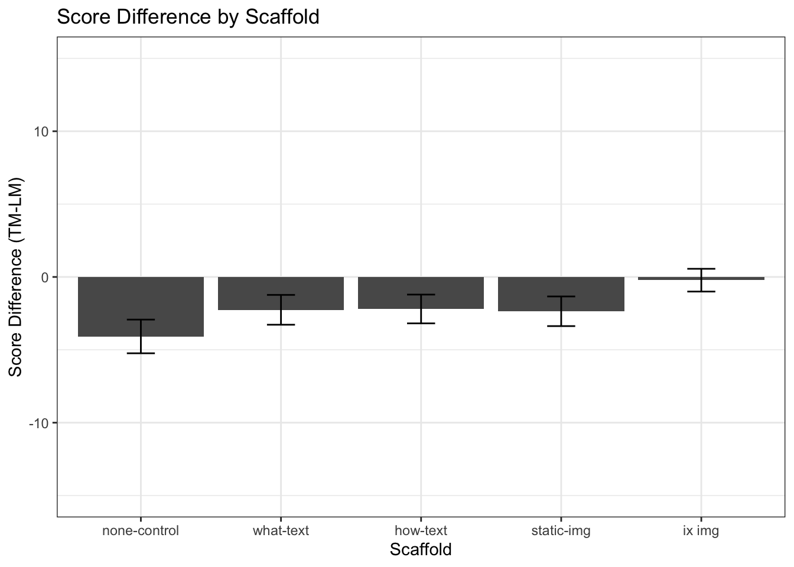

Results (Score)
Explore the data
We see a large variance in TM scores across Graph-Orders
#EXPLORE THE DATA
#create boxplot
#SIMPLE BOXPLOT BY CONDITION
# mixedPlot_condition <- ggplot(l_scores, aes(condition,value, color=variable))+ geom_boxplot() +
# labs(x="scaffold condition", y="score (max = 15)") +
# ggtitle("Task Score by Scaffold ") +
# theme_bw()
# mixedPlot_condition
#BOXPLOT BY CONDITION, FACET WITH ORDER
mixedPlot_order <- ggplot(l_scores, aes(condition,value, fill=variable))+ geom_boxplot() +
facet_wrap(~order, labeller=labeller(order = order_labels)) +
labs(x="scaffold condition", y="score (max = 15)", color="task")+
labs(title="Task Score by Scaffold & Graph-Order ") +
theme_bw() +
theme(strip.background = element_blank()) +
scale_fill_manual( values = c(green,red),
name="graphing task",
breaks=c("linear_score", "triangular_score"),
labels=c("linear", "triangular"))
mixedPlot_order
#BOXPLOT BY CONDITION, FACET WITH ORDER AND SCENARIO
mixedPlot_scenario <- ggplot(l_scores, aes(condition,value, fill=variable))+ geom_boxplot() +
facet_grid(lm_scenarios~order, labeller=labeller(order = order_labels)) +
labs(x="scaffold condition", y="score (max = 15)")+
ggtitle("Task Score by Scaffold, Task Order and Scenario ") +
theme_bw() +
theme(strip.background = element_blank()) +
scale_fill_manual( values = c(green,red),
name="graphing task",
breaks=c("linear_score", "triangular_score"),
labels=c("linear", "triangular"))
#use scale_fill_manual to manually change colors
mixedPlot_scenario
Hypothesis Testing
Compute mixed effects ANOVA on Response Score
Significant main effect of Graph F(1,297) = 97.67, p < .001
Significant main effect of Scaffold F(4,297) = 4.24, p < .01
Significant main effect of Scenario F(1,297) = 22.29, p < .001
Significant interaction of Scaffold and Graph F(4,297) = 9.99, p <.001
Significant interaction of Graph and Scenario F(1,297) = 34.80, p <.001
#construct contrasts for ANOVA model
options(contrasts=c("contr.sum","contr.poly"))
#execute the model
mixedModel = ezANOVA(data = l_scores,
dv = .(value),
wid = .(subject),
between = .(condition,order,lm_scenarios),
within = .(variable),
type = 3,
detailed = TRUE)
## Warning: Converting "subject" to factor for ANOVA.
## Warning: Data is unbalanced (unequal N per group). Make sure you specified
## a well-considered value for the type argument to ezANOVA().
mixedModel
## $ANOVA
## Effect DFn DFd SSn SSd
## 1 (Intercept) 1 296 6.032444e+04 4314.409
## 2 condition 4 296 2.474212e+02 4314.409
## 3 order 1 296 1.070270e+01 4314.409
## 4 lm_scenarios 1 296 3.243464e+02 4314.409
## 9 variable 1 296 6.708253e+02 2053.170
## 5 condition:order 4 296 3.979850e+01 4314.409
## 6 condition:lm_scenarios 4 296 7.450472e+01 4314.409
## 7 order:lm_scenarios 1 296 6.306627e-01 4314.409
## 10 condition:variable 4 296 2.785593e+02 2053.170
## 11 order:variable 1 296 2.378837e+01 2053.170
## 12 lm_scenarios:variable 1 296 2.382161e+02 2053.170
## 8 condition:order:lm_scenarios 4 296 2.393475e+01 4314.409
## 13 condition:order:variable 4 296 5.603432e+01 2053.170
## 14 condition:lm_scenarios:variable 4 296 2.757067e+01 2053.170
## 15 order:lm_scenarios:variable 1 296 1.699674e+00 2053.170
## 16 condition:order:lm_scenarios:variable 4 296 8.360845e+00 2053.170
## F p p<.05 ges
## 1 4.138698e+03 4.967248e-176 * 9.045226e-01
## 2 4.243727e+00 2.351329e-03 * 3.740306e-02
## 3 7.342835e-01 3.921915e-01 1.677991e-03
## 4 2.225254e+01 3.689436e-06 * 4.846832e-02
## 9 9.671109e+01 6.226124e-20 * 9.530930e-02
## 5 6.826171e-01 6.044789e-01 6.211356e-03
## 6 1.277892e+00 2.786863e-01 1.156531e-02
## 7 4.326807e-02 8.353644e-01 9.903297e-05
## 10 1.003979e+01 1.241419e-07 * 4.191296e-02
## 11 3.429505e+00 6.503691e-02 3.721953e-03
## 12 3.434297e+01 1.230461e-08 * 3.606168e-02
## 8 4.105247e-01 8.010291e-01 3.744770e-03
## 13 2.019580e+00 9.169296e-02 8.723179e-03
## 14 9.936975e-01 4.112221e-01 4.311185e-03
## 15 2.450374e-01 6.209585e-01 2.668550e-04
## 16 3.013402e-01 8.769499e-01 1.311312e-03
#summary(mixedModel)
MAIN EFFECT: Graph on SCORE
On average, participants scored significantly higher on the linear model task (M = 10.96, SD = 2.13) than on the triangular model (M = 8.78 SD = 4.44), t(316) = 9.41, p < 0.001, r = 0.47
bar <- ggplot(l_scores, aes(x = variable, y= value, fill=variable))
bar + stat_summary(aes(y = value, group=variable), fun.y=mean, geom="bar", position="dodge") +
stat_summary(fun.data = mean_cl_normal, geom="errorbar", position = position_dodge(width=0.9),width=0.2) +
labs (x = "Graph Task ", y= "Score", fill="Graph Task") +
coord_cartesian(ylim=c(0,15)) +
scale_x_discrete(labels=c("linear_score" = "Linear Graph (LM)", "triangular_score" = "Triangular Graph (TM)")) +
theme_bw() +
theme(strip.background = element_blank()) +
ggtitle("Mean Score by Graph Task")+
scale_fill_manual(values = c(green,red),
name = "Graph Task",
breaks =c("linear_score", "triangular_score"),
labels =c("linear","triangular"))

#CALULCULATE POSTHOC DIFFERENCE & EFFECT SIZE
mainEffectGraph <- t.test(value ~ variable, data=l_scores, paired=TRUE)
mainEffectGraph
##
## Paired t-test
##
## data: value by variable
## t = 9.4141, df = 315, p-value < 2.2e-16
## alternative hypothesis: true difference in means is not equal to 0
## 95 percent confidence interval:
## 1.722182 2.632249
## sample estimates:
## mean of the differences
## 2.177215
t <-mainEffectGraph$statistic[[1]]
df <-mainEffectGraph$parameter[[1]]
r <- sqrt(t^2/(t^2+df))
round(r,3)
## [1] 0.469
MAIN EFFECT: Scaffold on SCORE
MAIN EFFECT: Scenario on SCORE
When answering questions (with either graph) in the axis scenario (M = 9.20, SD = 4.12), participants had significantly lower scores, t(316) = -4.77, p < 0.001, r = -.26, than in the longmire scenario (M = 10.52, SD = 2.97)
bar <- ggplot(l_scores, aes(x = variable, y= value, fill=lm_scenarios))
bar + stat_summary(aes(y = value, group=lm_scenarios), fun.y=mean, geom="bar", position="dodge") +
stat_summary(fun.data = mean_cl_normal, geom="errorbar", position = position_dodge(width=0.9),width=0.2) +
labs (x = "Graph Task", y= "Score", fill="") +
coord_cartesian(ylim=c(0,15)) +
scale_x_discrete(labels=c("linear_score" = "linear (LM)", "triangular_score" = "triangular (TM)")) +
theme_bw() +
theme(strip.background = element_blank()) +
ggtitle("Mean Score by Scenario & Graph")+
scale_fill_manual(values = c(blue,purple),
name = "Task Scenario",
breaks =c("axis","longmire"),
labels =c("axis","longmire"))

dots <- ggplot(l_scores, aes(x = lm_scenarios, y= value, color=variable))
dots + stat_summary(aes(y = value, group=variable), fun.y=mean, geom="point", position = position_dodge(width=0.1),width=0.2) +
stat_summary(fun.data = mean_cl_normal, geom="errorbar", position = position_dodge(width=0.1),width=0.2) +
stat_summary(aes(y = value, group=variable), fun.y=mean, geom="line", position=position_dodge(width=0.1)) +
labs (x = "Task Scenario ", y= "Score", fill="Task Graph") +
coord_cartesian(ylim=c(0,15)) +
scale_x_discrete(labels=c("axis" = "axis", "longmire" = "longmire")) +
theme_bw() +
theme(strip.background = element_blank()) +
ggtitle("Mean Score by Scenario & Graph")+
scale_color_manual(values = c(green,red),
name = "Task Graph",
breaks =c("linear_score", "triangular_score"),
labels =c("linear (LM)","triangular (TM)"))
## Warning: Ignoring unknown parameters: width

INTERACTION: Scaffold & Graph
INTERACTION: Scenario & Graph
Results (Time)
Explore the data
We see comparable response times for LM and TM graphs when the LM graph is solved first. However, when the TM graph is solved first, the TM graph-reading task seems to take much longer.
#EXPLORE THE DATA
#SIMPLE BOXPLOT BY CONDITION
# mixedPlot_condition <- ggplot(l_times, aes(condition,value, color=variable))+ geom_boxplot() +
# labs(x="scaffold condition", y="time (mins)") +
# ggtitle("Response Time by Scaffold ") +
# theme_bw()
# mixedPlot_condition
#BOXPLOT BY CONDITION, FACET WITH ORDER
mixedPlot_order <- ggplot(l_times, aes(condition,value, fill=variable))+ geom_boxplot() +
facet_wrap(~order, labeller=labeller(order = order_labels)) +
labs(x="scaffold condition", y="time (mins)", color="task")+
labs(title="Response Time by Scaffold & Graph-Order ") +
theme_bw() +
theme(strip.background = element_blank()) +
scale_fill_manual( values = c(green,red),
name="graphing task",
breaks=c("LM_T_M", "TM_T_M"),
labels=c("linear", "triangular"))
mixedPlot_order
#BOXPLOT BY CONDITION, FACET WITH ORDER AND SCENARIO
mixedPlot_scenario <- ggplot(l_times, aes(condition,value, fill=variable))+ geom_boxplot() +
facet_grid(lm_scenarios~order, labeller=labeller(order = order_labels)) +
labs(x="scaffold condition", y="time (mins)")+
ggtitle("Response Time by Scaffold, Task Order and Scenario ") +
theme_bw() +
theme(strip.background = element_blank()) +
scale_fill_manual( values = c(green,red),
name="graphing task",
breaks=c("LM_T_M", "TM_T_M"),
labels=c("linear", "triangular"))
mixedPlot_scenario

Hypothesis Testing
Compute mixed effects ANOVA on Response Time
Significant main-effect of Graph F(1,297) = 109.71, p <.001
Significant interaction between Graph & Scaffold F(4,297) = 3.51, p < .01
Significant interaction between Graph and Scenario, F(1,297) = 8.35, p <.01
Significant interaction between Graph and Graph-Order, F(1,297) = 44.24, p <.001
#construct contrasts for ANOVA model
options(contrasts=c("contr.sum","contr.poly"))
#execute the model
mixedModel = ezANOVA(data = l_times,
dv = .(value),
wid = .(subject),
between = .(condition,order,lm_scenarios),
within = .(variable),
type = 3,
detailed = TRUE)
## Warning: Converting "subject" to factor for ANOVA.
## Warning: Data is unbalanced (unequal N per group). Make sure you specified
## a well-considered value for the type argument to ezANOVA().
mixedModel
## $ANOVA
## Effect DFn DFd SSn SSd
## 1 (Intercept) 1 296 6.152673e+04 3625.023
## 2 condition 4 296 5.451453e+01 3625.023
## 3 order 1 296 5.412868e-01 3625.023
## 4 lm_scenarios 1 296 3.302950e+01 3625.023
## 9 variable 1 296 4.245147e+02 1145.391
## 5 condition:order 4 296 3.644702e+01 3625.023
## 6 condition:lm_scenarios 4 296 8.098356e+01 3625.023
## 7 order:lm_scenarios 1 296 1.703814e+01 3625.023
## 10 condition:variable 4 296 5.436523e+01 1145.391
## 11 order:variable 1 296 1.711826e+02 1145.391
## 12 lm_scenarios:variable 1 296 3.232806e+01 1145.391
## 8 condition:order:lm_scenarios 4 296 3.690296e+01 3625.023
## 13 condition:order:variable 4 296 3.440708e+01 1145.391
## 14 condition:lm_scenarios:variable 4 296 2.334054e+01 1145.391
## 15 order:lm_scenarios:variable 1 296 2.473067e-01 1145.391
## 16 condition:order:lm_scenarios:variable 4 296 2.271490e+01 1145.391
## F p p<.05 ges
## 1 5.023944e+03 9.890040e-188 * 9.280450e-01
## 2 1.112841e+00 3.505529e-01 1.129852e-02
## 3 4.419859e-02 8.336292e-01 1.134546e-04
## 4 2.697013e+00 1.015984e-01 6.876213e-03
## 9 1.097060e+02 4.807775e-22 * 8.171713e-02
## 5 7.440173e-01 5.626588e-01 7.582291e-03
## 6 1.653171e+00 1.609305e-01 1.669283e-02
## 7 1.391244e+00 2.391423e-01 3.558916e-03
## 10 3.512361e+00 8.058308e-03 * 1.126792e-02
## 11 4.423822e+01 1.402607e-10 * 3.464116e-02
## 12 8.354442e+00 4.132080e-03 * 6.731167e-03
## 8 7.533247e-01 5.564595e-01 7.676416e-03
## 13 2.222929e+00 6.656133e-02 7.160949e-03
## 14 1.507956e+00 1.997993e-01 4.868948e-03
## 15 6.391074e-02 8.005938e-01 5.183909e-05
## 16 1.467536e+00 2.120297e-01 4.739055e-03
#summary(mixedModel)
MAIN EFFECT: Graph on TIME
On average, participants spent significantly more time on triangular model task (M = 10.84, SD = 3.28) than on the linear model (M = 9.20, SD = 2.53), t(316) = -9.46, p < 0.001, r = 0.47

##
## Paired t-test
##
## data: value by variable
## t = -9.458, df = 315, p-value < 2.2e-16
## alternative hypothesis: true difference in means is not equal to 0
## 95 percent confidence interval:
## -1.984566 -1.301067
## sample estimates:
## mean of the differences
## -1.642816
## [1] 0.47
INTERACTION: Scaffold & Graph
INTERACTION: Scenario & Graph
INTERACTION: Order & Graph